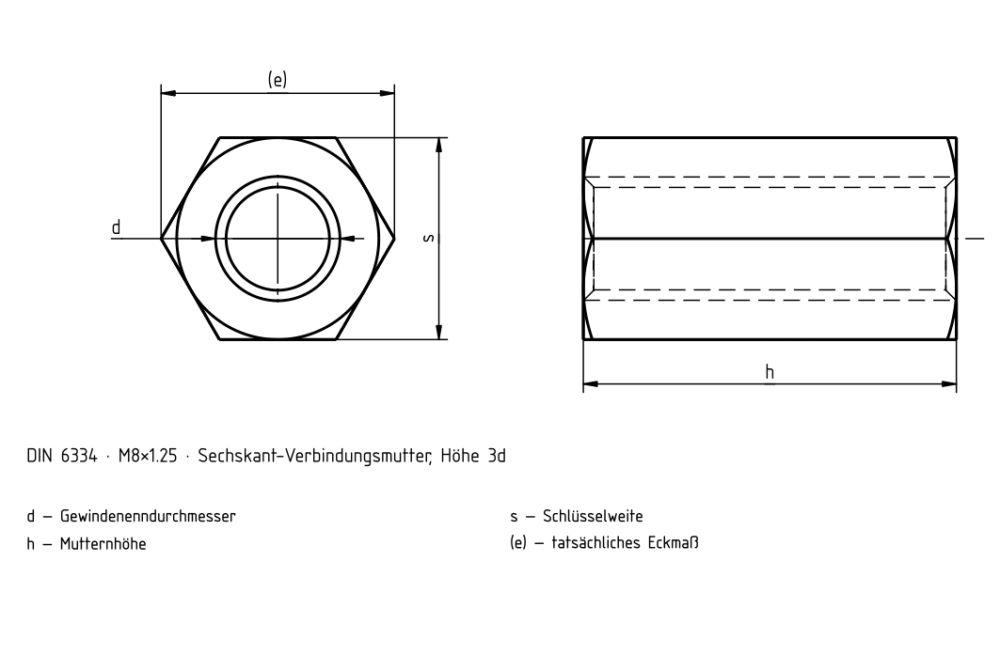

Verbindungsmuttern

DIN 6334 · h = 3d
| d | P [mm] | s [mm] | h [mm] | e_min [mm] |
|---|---|---|---|---|
| M6 | 1 | 10 | 18 | 11,05 |
| M8 | 1,25 | 13 | 24 | 14,38 |
| M10 | 1,5 | 17 | 30 | 18,9 |
| M12 | 1,75 | 19 | 36 | 21,1 |
| M14 | 2 | 22 | 42 | 24,49 |
| M16 | 2 | 24 | 48 | 26,75 |
| M18 | 2,5 | 27 | 54 | 29,56 |
| M20 | 2,5 | 30 | 60 | 33,53 |
| M22 | 2,5 | 32 | 66 | 35,03 |
| M24 | 3 | 36 | 72 | 39,98 |
| M27 | 3 | 41 | 81 | 45,2 |
| M30 | 3,5 | 46 | 90 | 50,85 |
| M33 | 3,5 | 50 | 99 | 55,37 |
| M36 | 4 | 55 | 108 | 60,79 |